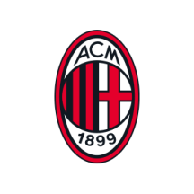
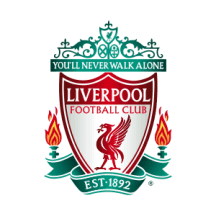

UEFA Champions League Champions

Real Madrid (14)
1956, 1957, 1958, 1959, 1960, 1966, 1998, 2000, 2002, 2014, 2016, 2017, 2018, 2022

Milan (7)
1963, 1969, 1989, 1990, 1994, 2003, 2007
Bayern Munich (6)
1974, 1975, 1976, 2001, 2013, 2020

Liverpool (6)
1977, 1978, 1981, 1984, 2005, 2019
Barcelona (5)
1992, 2006, 2009, 2011, 2015
Ajax (4)
1971, 1972, 1973, 1995
Inter Milan (3)
1964, 1965, 2010

Manchester United (3)
1968, 1999, 2008
Juventus (2)
1985, 1996
Benfica (2)
1961, 1962

Chelsea (2)
2012, 2021
Nottingham Forest (2)
1979, 1980

Porto (2)
1987, 2004
Celtic (1)
1967
Hamburger SV (1)
1983
Steaua București (1)
1986
Marseille (1)
1993
Borussia Dortmund (1)
1997
Manchester City (1)
2023
Feyenoord (1)
1970
Aston Villa (1)
1982
PSV Eindhoven (1)
1988